Conventional WAM
One visual trajectory
A single temporal process must simultaneously represent long-range task progression and dense local motion.
World Action Models for Long-Horizon Manipulation
A multi-scale World Action Model that separately captures long-horizon task evolution and fine-grained local interaction dynamics, while enabling both to jointly guide robot actions.
World Action Models (WAMs) improve robotic manipulation by jointly modeling visual dynamics and robot actions. However, a single visual trajectory must simultaneously represent slow task-level evolution and dense local interaction dynamics, which becomes increasingly difficult for long-horizon manipulation. We propose HiLo-WAM, which decouples visual world modeling into complementary long-horizon and local dynamics processes. A sparse long-horizon visual stream captures historical task context and coarse future evolution, while a dense local visual stream models fine-grained short-horizon robot--object interactions. The two processes operate at different temporal resolutions and interact with action generation through structured cross-stream attention. Progressive stream-wise denoising further limits the inference overhead introduced by long-horizon visual modeling. Experiments in simulation and on a physical robot demonstrate strong long-horizon manipulation performance and verify the distinct, complementary roles of the two temporal processes.
Motivation
Long-horizon manipulation requires two different kinds of visual dynamics: task-level evolution over extended time and precise local interactions around the current control step.
A single temporal process must simultaneously represent long-range task progression and dense local motion.
Sparse observations provide broader temporal coverage for historical context and coarse future evolution.
Dense short-range observations preserve the fine-grained visual dynamics required for precise control.
Method
Multi-scale temporal modeling separates the two visual roles, while structured cross-stream interaction lets them jointly support action generation.
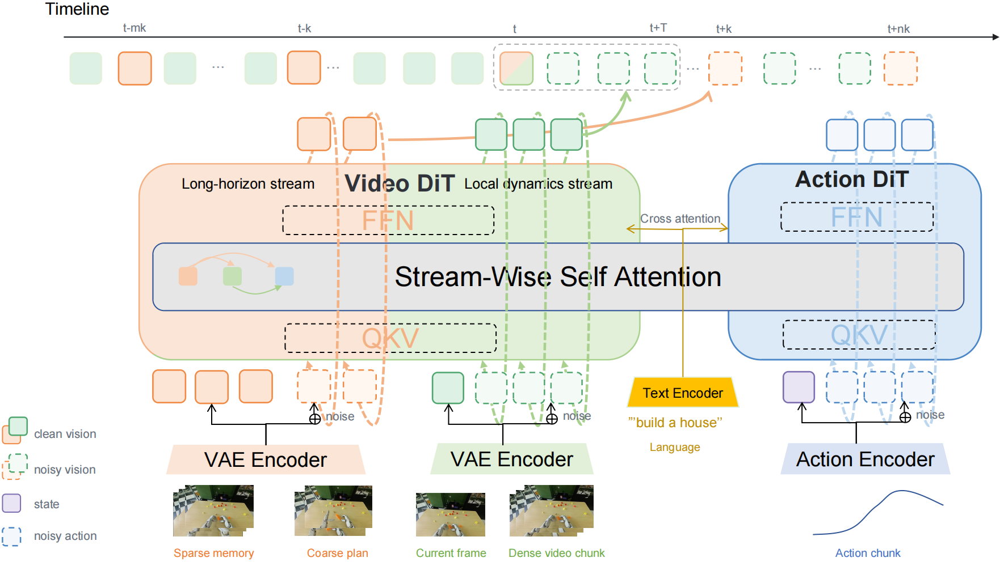
The long-horizon stream samples observations with temporal stride k, providing broader but sparser temporal coverage, while the local stream uses dense unit-stride observations.
Information flows from long-horizon task evolution toward local dynamics and action generation, while uncertain distant futures remain restricted to the long-horizon stream.
Visual streams terminate once sufficient representations are obtained, while the action stream continues to refine, reducing unnecessary world-model computation.
The attention mask defines how information is exchanged across the long-horizon, local-dynamics, and action streams. Arrows indicate unidirectional attention between streams.
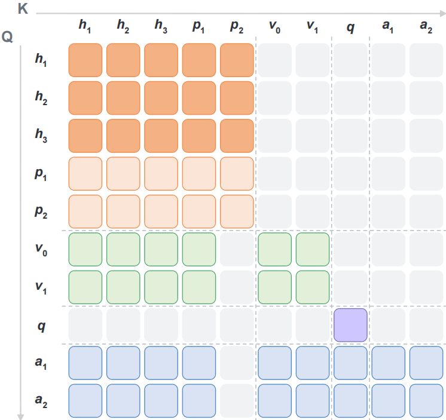
Main Results
HiLo-WAM performs strongly on both RoboTwin 2.0 and the RoboDojo long-horizon benchmark without embodied pretraining.
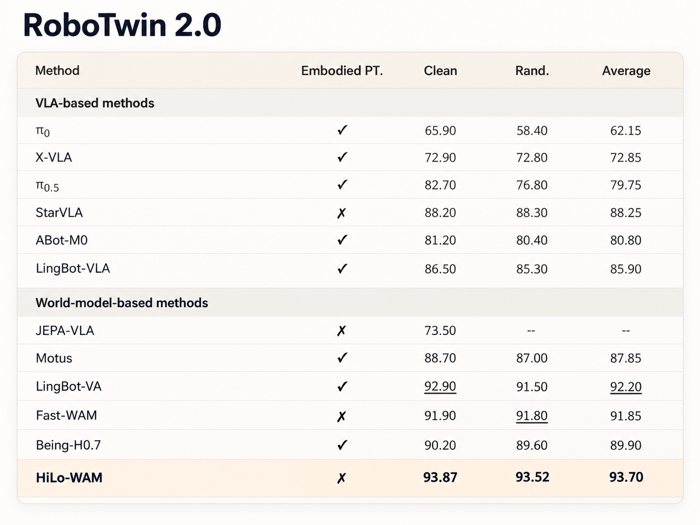
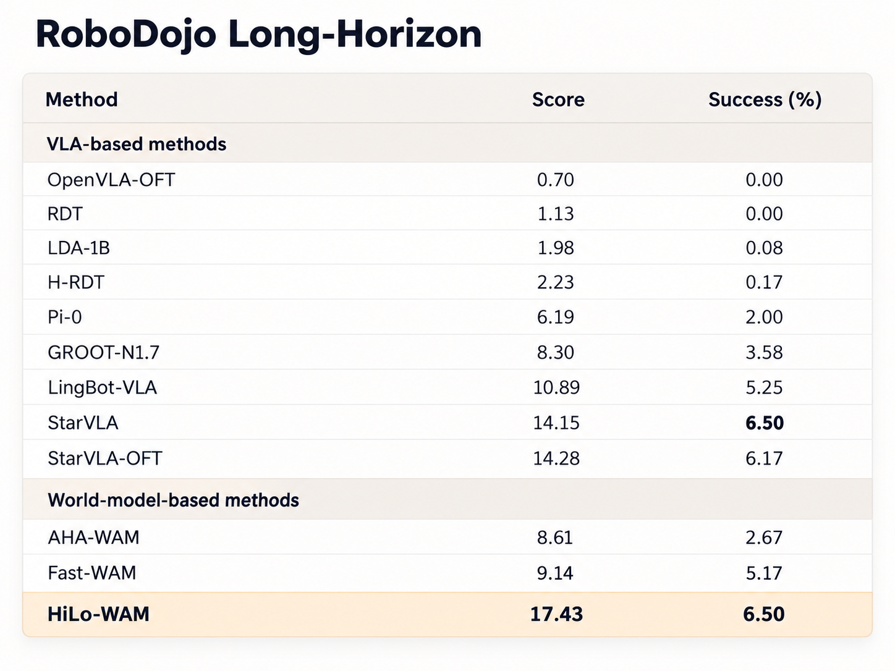
On RoboDojo, Fast-WAM frequently switches target objects before completing the current manipulation, leading to inconsistent task progression under multimodal action distributions. HiLo-WAM maintains a more coherent long-horizon task sequence.
On RoboTwin 2.0, the cup-hanging task requires precise local alignment. Fast-WAM fails during final placement, while HiLo-WAM completes the interaction successfully. Overall, HiLo-WAM maintains strong capabilities in both long-horizon task evolution and local interaction dynamics.
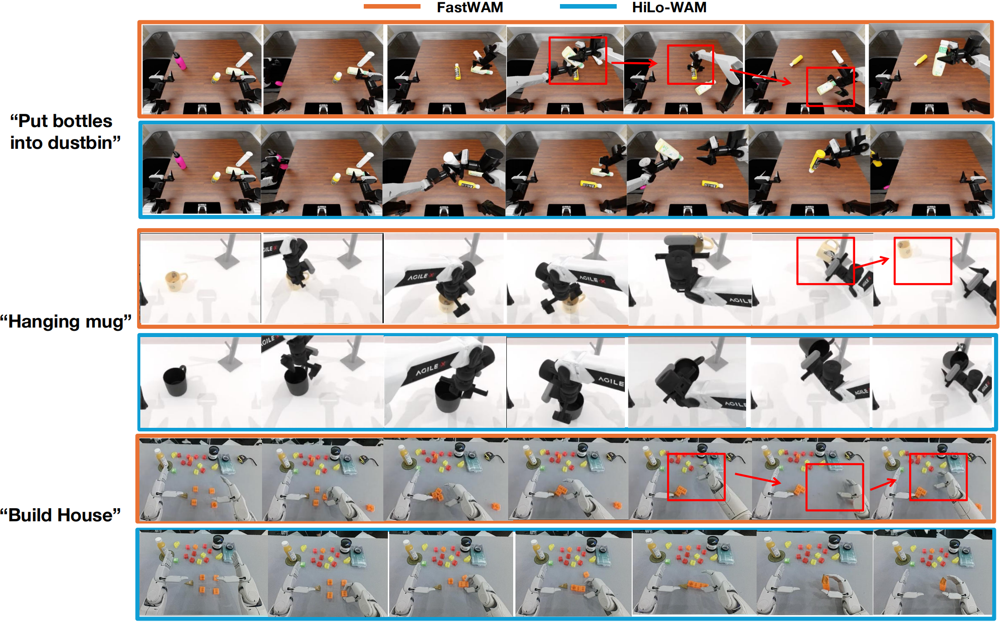
Understanding HiLo-WAM
Ablations, temporal-scale analysis, and visualization reveal how the long-horizon and local streams play different but complementary roles.
Adding coarse future planning to local dynamics substantially improves performance, while sparse historical memory provides an additional gain. Removing the local stream slightly reduces performance, showing that dense short-horizon dynamics remain complementary to long-range task context.
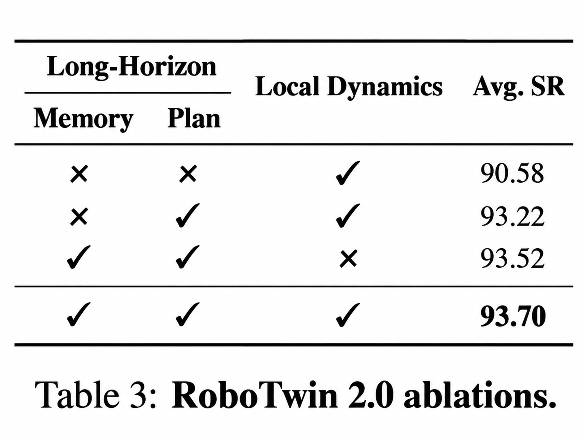
Increasing temporal stride broadens the coverage of the long-horizon stream, but also makes observations sparser. Performance peaks at k = 4, indicating that effective long-horizon modeling requires balancing temporal coverage and temporal resolution rather than simply increasing the stride.
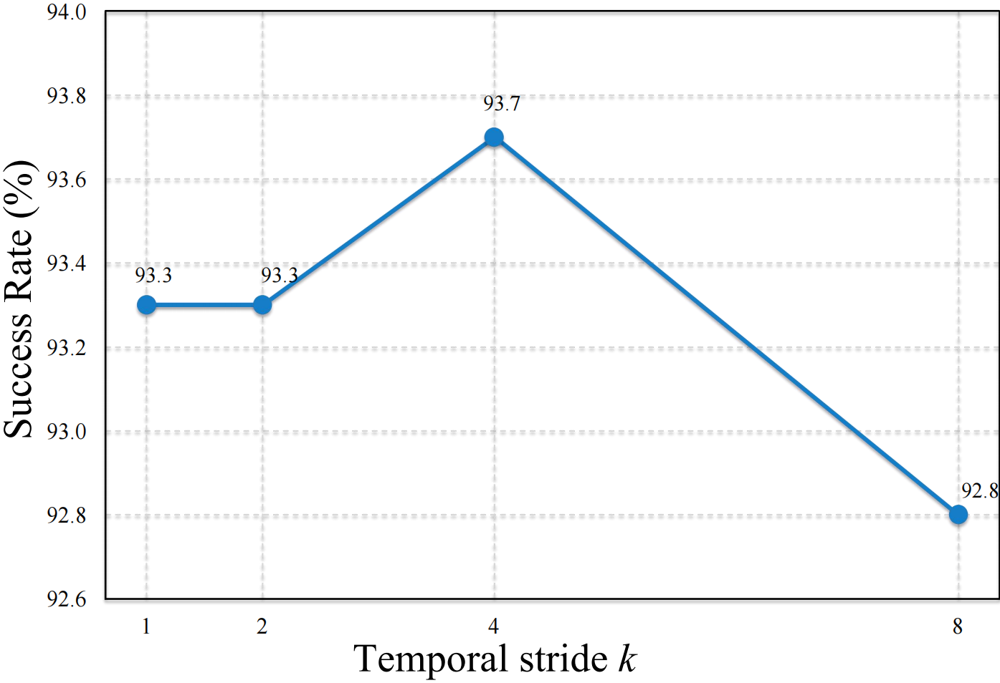
The rollout attention visualization shows how the streams exchange information, while visual prediction shows what effect that interaction has on local dynamics.
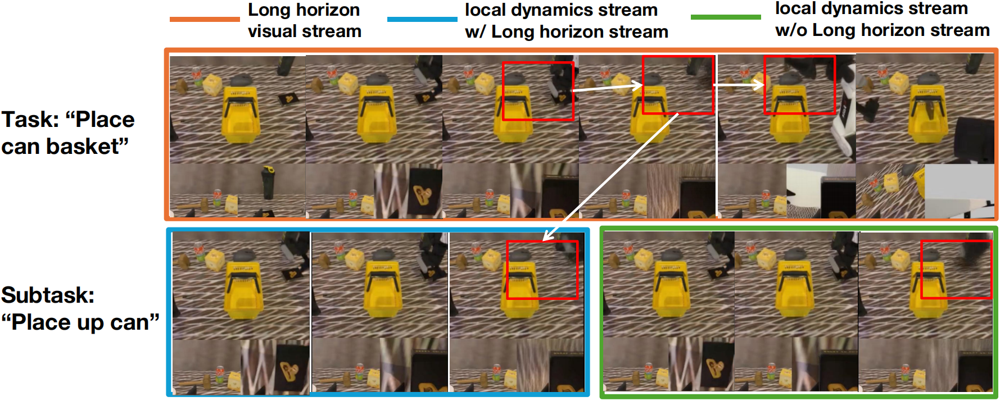
Overall, HiLo-WAM decouples long-horizon task evolution from local interaction dynamics, while enabling the two processes to interact and jointly support action generation.
Physical Robot
HiLo-WAM maintains strong performance under both in-domain and out-of-distribution conditions.
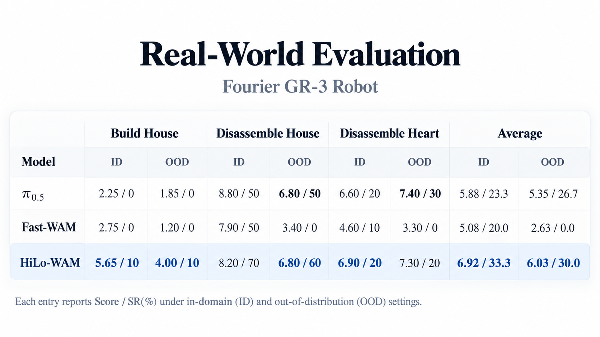
Rollouts
Each row is one task. Compare the same task across π0.5, Fast-WAM, and HiLo-WAM.
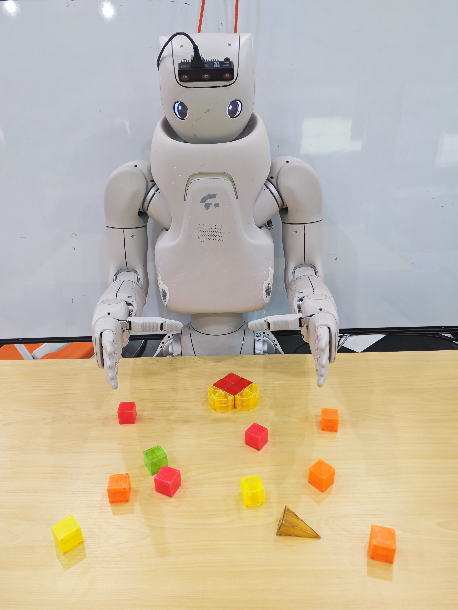
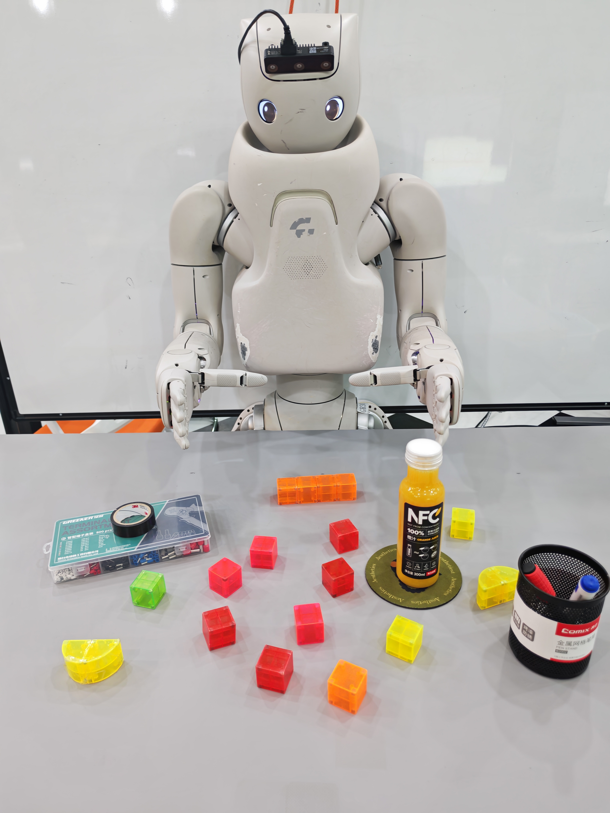
Multi-scale visual modeling introduces additional long-horizon computation. Progressive denoising reduces HiLo-WAM latency from 404 ms to 293 ms by terminating visual streams at different stages. In deployment, Real-Time Chunking (RTC) can further overlap policy inference with ongoing robot execution.
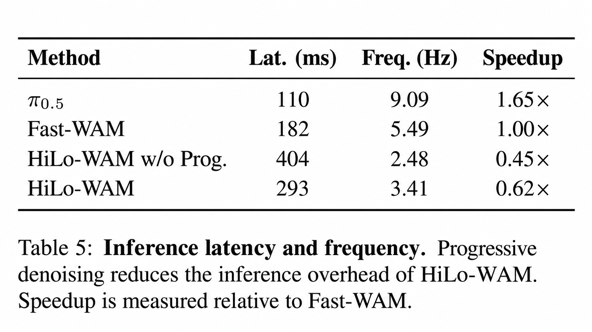
Long-horizon manipulation benefits from explicitly separating task-level temporal evolution from fine-grained local interaction dynamics. HiLo-WAM models them at different temporal scales, lets them interact, and uses both to guide action generation.
@article{hilowam2026,
title = {HiLo-WAM: Decoupling Long-Horizon Task Evolution and Local Dynamics in World Action Models},
author = {Anonymous authors},
journal = {arXiv preprint},
year = {2026}
}